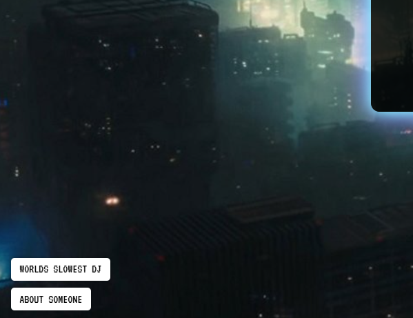
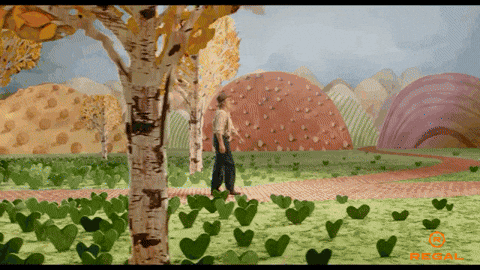
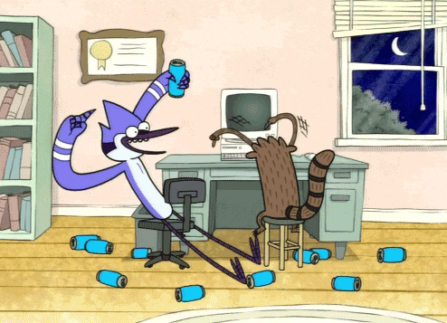

film - tonight
Today the first PROANTI FILM (if u can call it that) will b born. If you want to participate (film, dance, exist, fade into the background, swing metal pole at pinata, etc) email reappearingooze@proton.me before 8pm tonight!!
CERTIFIABLY WORSE THAN DOOMSCROLLING
Today the first PROANTI FILM (if u can call it that) will b born. If you want to participate (film, dance, exist, fade into the background, swing metal pole at pinata, etc) email reappearingooze@proton.me before 8pm tonight!!
I suck at this website thing, Ive been trying to add it for hours now but I made it such an annoying process to add things. And Im extremly lazy and unmotivated. Whatever. Just know it exists.
It has been 23 days since I have uploaded to this site. I don’t like the way this site looks. I don’t know what to do with all these things and ideas and whatevers. I made leroy helmet. I smashed leroy helmet. No worries, I can repair it, if I ever get up. I have been depressed and unmotivated, yet I have many shotty ideas. I don’t usually write them down, unfortunately. I don’t know what The Hellps best song is. I don’t care about Fakemink and nettspend beef; I just like their songs. Does anyone see me? I am lonely. I don’t know anything and this is not me admitting that I know nothing in order to like learn stuff or whatever that one philosopher said? No like, I’m just dumb, I don’t know anything. Once, when I was very lost, I asked my friend: Tell me something that makes sense. My friend was unable to do so. Could have been for many reasons but mostly I think it’s because nothing makes sense. I don’t know what any band’s best song is. I have been listening to the same 2000 songs for the past 5 years. I like to stare at the fire.
I am working on creating LEROY, but in real life. It is a helmet/head that will be worn, for a film / video I suppose. BOOGERHEADS (now in 3D) is a concept that’s been brewing for around 2 or 3 years now. When I first thought about boogerheads, I could never decide on a medium, and still can’t. I wanted it to be stop motion, live action, comics, animated, and more. It’ll come around someday, I figured. Looking at Leroy’s head is almost surreal. This character that keeps appearing in my comic is suddenly off the page, and looking at me. We’ve been talking. More soon — I’ll upload images eventually.
In the bottom left corner of the homepage...
ABOUT SOMEONE is a new section with minimal info about somebody... I’m not sure what to put yet.
WORLDS SLOWEST DJ is a new section where I’ll sometimes, slowly, be posting some tracks. It’s just the name of some songs I like — an archive of sorts.
have a good day 0/
The rules are as follows:
1. Go west
2. If you can’t go west (or it is more convenient to go in another direction) choose another direction to go in, preferably north or south, until going west is a viable option again.
3. When you turn around and go back, you lose.
I don’t even know why I made this page when all I want to do is post d0llywood songs, be like, yo go check this song out, it’s peak. I’m working on another page for that exact reason, sort of like an archive of what I was listening to at the time.
I feel like alice
if [u] the mad hatter
then im the cat bitch
But it’s always just d0lly... <3. I had so much to think about a few days ago, and didn’t know how to think about it, but I’m always reminded. I don’t care if everyone sees me acting erratic, I’m just keep doing me. I might be annoying, but I didn’t hurt anybody. GET SLEAZY AND GLAMOROUS.
Hello. This page will likely be filled with ramblings and offputting streams of consciousness, or maybe something really REALLY cool? LITERALLY NO ONE KNOWS!
I’m creating this because sometimes I want to share things, or archive them, but... publicly? Like I could access them from any device, and you could too, but still it’s not so public that lots of people will see this. I’m sure just a few. I DON’T KNOW, IT’S A BLOG I GUESS? Pretentious as always, thinking my thoughts are worth posting online? Well, I don’t really think they’re worth anything, and I don’t care if not a soul sees it. I like my creations living in a dark corner on the internet. Not because it’s edgy, but because it’s antisocial, and probably thinks it should’ve never been born. I don’t know though — this is all a guess. Go ask it for yourself.